Visual Studio 2005 Setup
Visual Studio 2005 is in general fairly simple to set up, but if using Express, you require the Platform SDK as well.
These files will need to be extracted somehow. To accomplish this, we recommend 7-Zip. Installation1. Extract Installer
This step depends on your installation medium. If you downloaded it from above, you should follow this, but if you have a CD you can skip this step and move on to step 2. 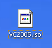 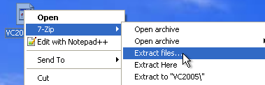 Extract it to a directory that you can find easily: 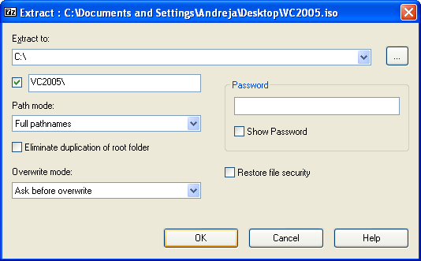 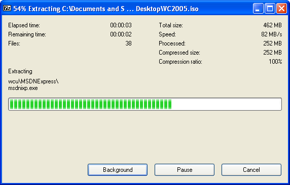 Now you are ready to start installing. 2. Install Visual Studio 2005
Open your Visual Studio installation directory, CD, or other medium, and run setup.exe: 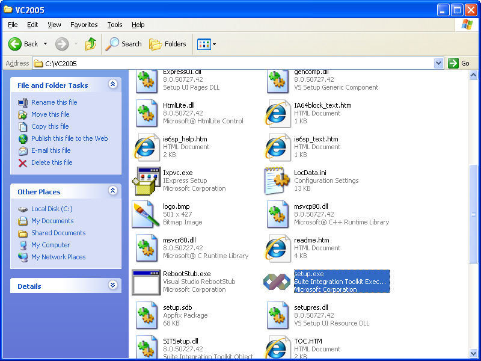 Select the IDE, you do not need MSDN or SQL Server, but you can choose to install them if you wish: 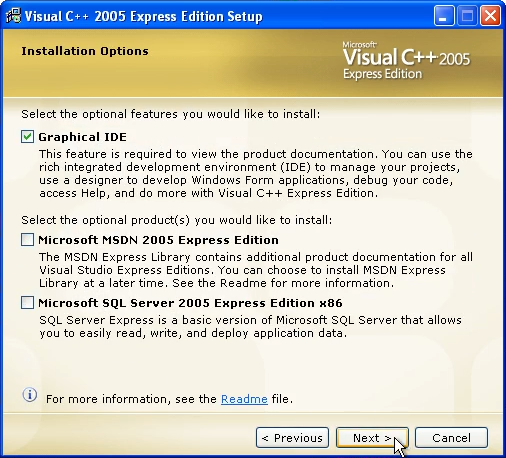 Use the default path when prompted, and be sure to note it down! You will be using it in the Platform SDK step! 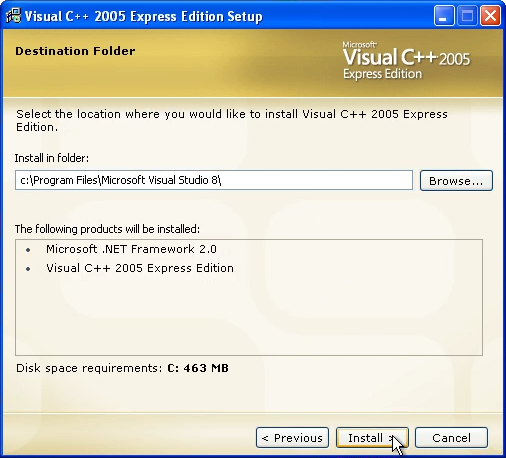 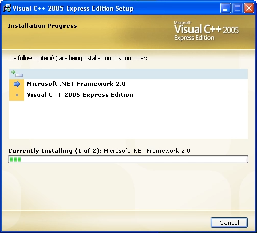 If you are not installing Express edition, you can end here since it includes a platform SDK. Otherwise, proceed to step #3 and #4 to install the Platform SDK. 3. Extract Platform SDK
Right click on the IMG file, and click on 7-Zip->Extract files...: 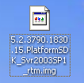 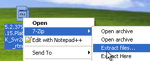 Extract it to a directory that you can find easily: 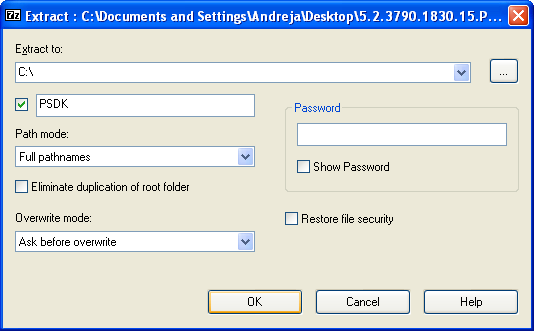 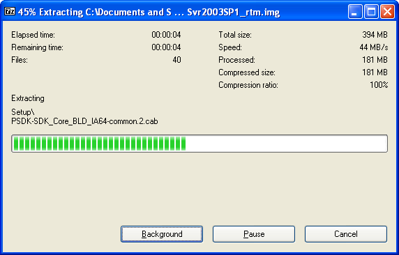 4. Install Platform SDK
This and the next step are only really required on Express editions. Non-Free editions already include a Platform SDK, and can skip these steps. 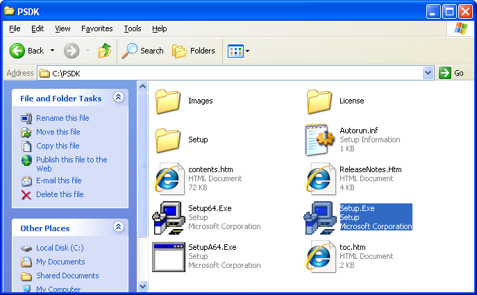 Click on Next and accept any agreements: 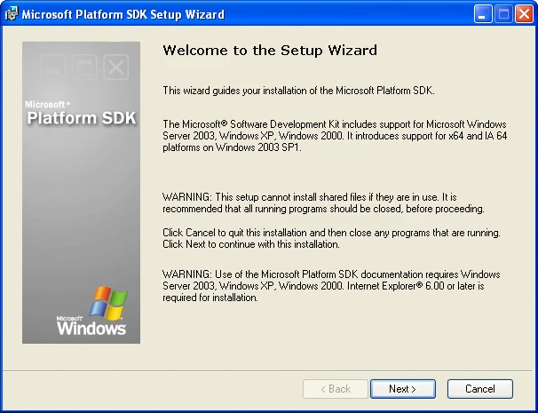 Proceed with the installation, and set the installation type to Custom: 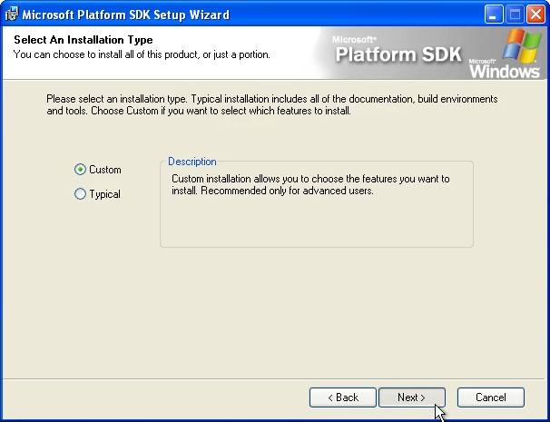 When you get to the path prompt, you are going to want to use the path you copied from the Visual Studio 2005 installer. To that path, you will want to append VC\PlatformSDK\ to the end Generally, these are going to be the resulting paths, but your system might differ:
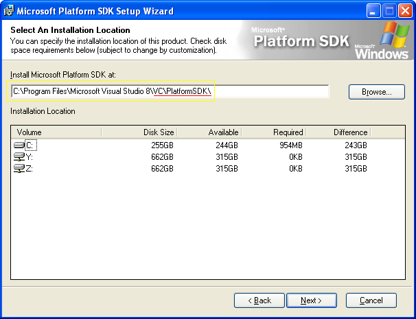 In options, we recommend setting "Register Environment Variables" to install. 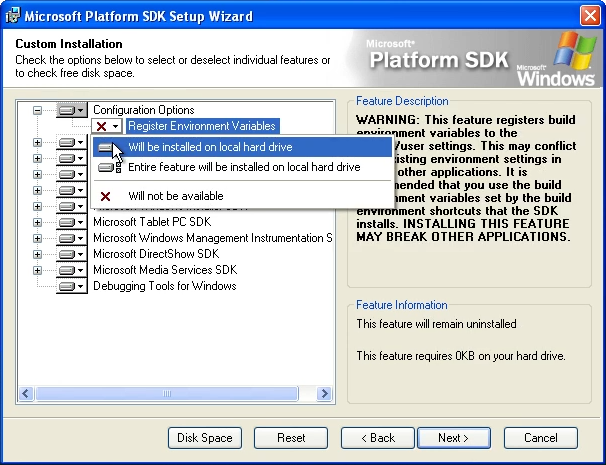 And now, proceed with the installation. 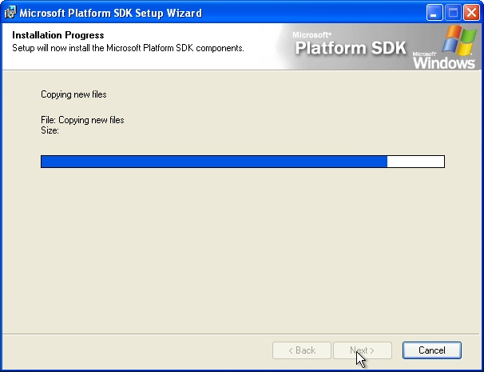 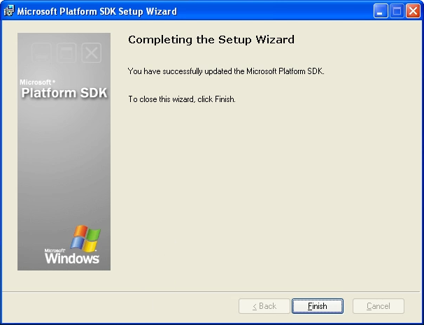 Your setup is now complete! |
||||||||||||||||